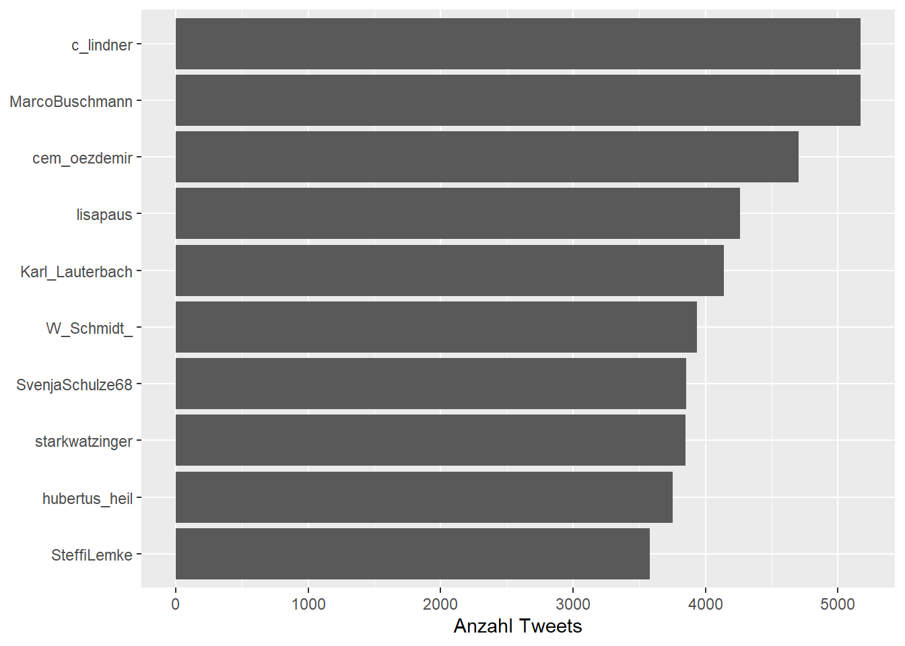
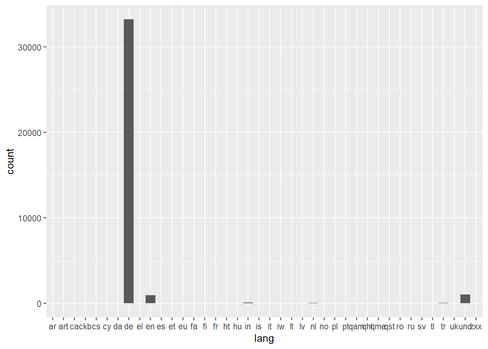
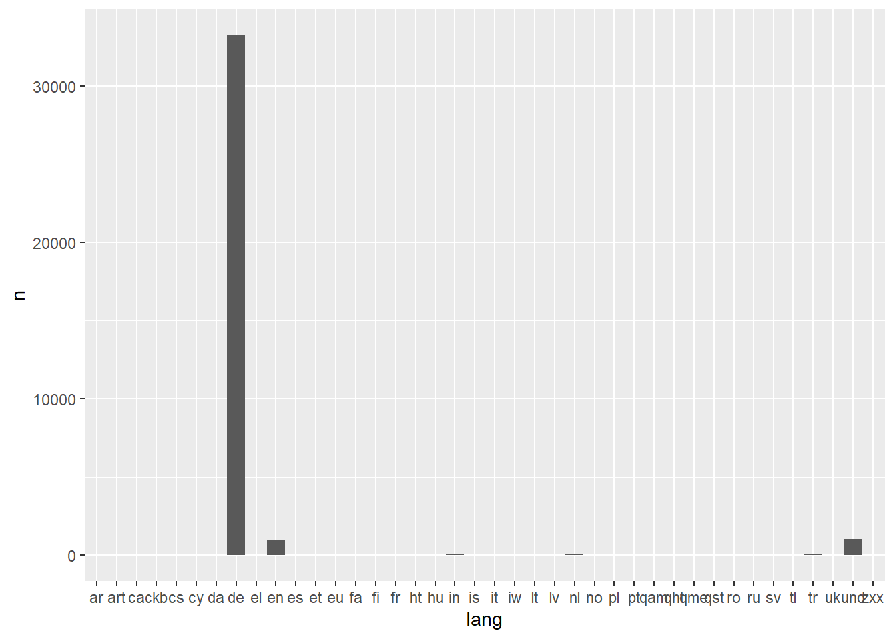
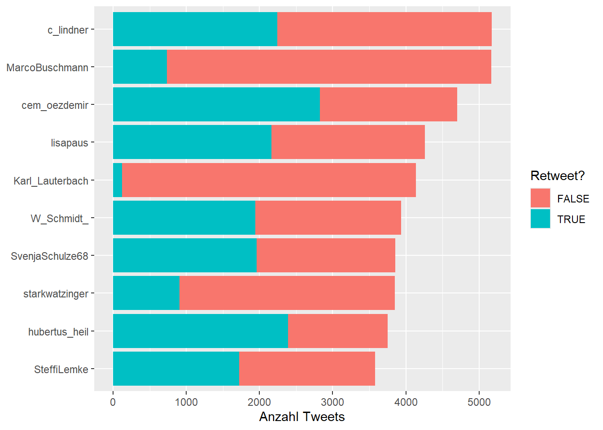
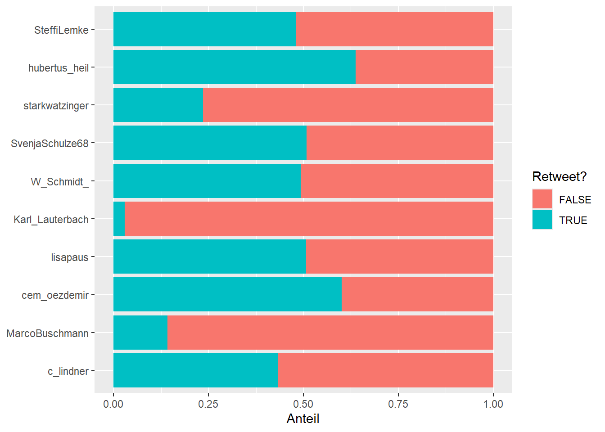
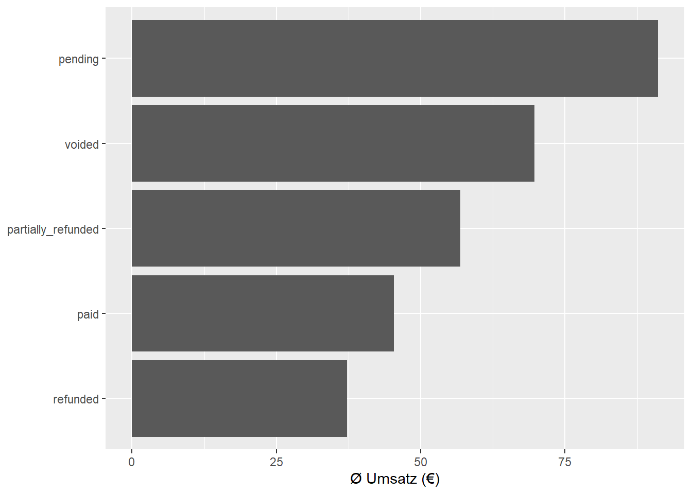

15 Balkendiagramme
Balkendiagramme sind das Arbeitspferd der explorativen Datenanalyse. Wenn ihr wissen wollt, wie oft etwas vorkommt oder wie sich Kategorien vergleichen lassen, greift ihr fast immer zu einem Balkendiagramm. Claus Wilke nennt sie in Fundamentals of Data Visualization das Standardwerkzeug für die Darstellung von Mengen und Proportionen (Wilke 2019).
In diesem Kapitel zeigen wir, wie ihr Balkendiagramme mit ggplot2 baut, wann ihr geom_bar() und wann geom_col() nutzt, und welche Varianten es gibt.
15.1 Einfaches Balkendiagramm
Die einfachste Variante: Wie viele Tweets hat jeder Account veröffentlicht? Wir bereiten die Daten vor und nutzen geom_col():
Drei Dinge, die dieses Diagramm besser machen:
-
reorder(screen_name, n)sortiert die Balken nach Häufigkeit statt alphabetisch. -
coord_flip()dreht die Achsen, damit die Accountnamen links lesbar sind. -
labs(x = NULL)entfernt die überflüssige Achsenbeschriftung.
15.2 geom_bar() vs geom_col()
In ggplot2 gibt es zwei Geoms für Balkendiagramme:
| Geom | Zählt selbst? | Braucht y? |
Typischer Einsatz |
|---|---|---|---|
geom_bar() |
Ja | Nein | Rohdaten, Häufigkeiten zählen |
geom_col() |
Nein | Ja | Vorberechnete Werte darstellen |
geom_bar() zählt automatisch, wie oft jeder x-Wert vorkommt:
tweets |>
filter(!is_retweet) |>
ggplot() +
aes(x = lang) +
geom_bar()

geom_col() erwartet, dass ihr die Werte vorher berechnet habt:
tweets |>
filter(!is_retweet) |>
count(lang) |>
ggplot() +
aes(x = lang, y = n) +
geom_col()

In der Praxis nutzt ihr meist geom_col(), weil ihr die Daten vorher ohnehin mit count() oder summarise() aufbereitet.
15.3 Gestapelte Balken
Wenn ihr eine zweite Variable als Farbe einbringt, stapelt ggplot2 die Balken automatisch:
tweets |>
count(screen_name, is_retweet, sort = TRUE) |>
filter(screen_name %in% (tweets |> count(screen_name, sort = TRUE) |> head(10) |> pull(screen_name))) |>
ggplot() +
aes(x = reorder(screen_name, n), y = n, fill = is_retweet) +
geom_col() +
coord_flip() +
labs(x = NULL, y = "Anzahl Tweets", fill = "Retweet?")

Gestapelte Balken zeigen die Zusammensetzung jedes Balkens. Das ist nützlich, wenn euch sowohl die Gesamtzahl als auch der Anteil interessiert.
15.4 Gruppierte Balken
Wenn die Teile schwer zu vergleichen sind, weil die Balken unterschiedlich hoch sind, hilft position = "dodge":
tweets |>
count(screen_name, is_retweet, sort = TRUE) |>
filter(screen_name %in% (tweets |> count(screen_name, sort = TRUE) |> head(10) |> pull(screen_name))) |>
ggplot() +
aes(x = reorder(screen_name, n), y = n, fill = is_retweet) +
geom_col(position = "dodge") +
coord_flip() +
labs(x = NULL, y = "Anzahl Tweets", fill = "Retweet?")
Jetzt stehen die Balken nebeneinander statt übereinander. Das macht den Vergleich zwischen Original-Tweets und Retweets pro Account leichter.
15.5 Prozentuale Balken
Mit position = "fill" werden die Balken auf 100% normiert. Das zeigt reine Proportionen:
tweets |>
count(screen_name, is_retweet) |>
filter(screen_name %in% (tweets |> count(screen_name, sort = TRUE) |> head(10) |> pull(screen_name))) |>
ggplot() +
aes(x = reorder(screen_name, -n), y = n, fill = is_retweet) +
geom_col(position = "fill") +
coord_flip() +
labs(x = NULL, y = "Anteil", fill = "Retweet?")

Hier seht ihr sofort, welcher Account den höchsten Anteil an Retweets hat — unabhängig davon, wie viele Tweets insgesamt veröffentlicht wurden. Diese Darstellung eignet sich besonders gut, wenn euch Proportionen wichtiger sind als absolute Zahlen (Wilke 2019).
15.6 Balken nach Wert
Bisher haben wir Häufigkeiten gezählt. Oft wollt ihr aber einen berechneten Wert darstellen, zum Beispiel den durchschnittlichen Umsatz:

15.7 Typische Fehler
Zu viele Kategorien
Balkendiagramme mit mehr als 10–15 Balken werden schnell unlesbar. Filtert vorher auf die relevantesten Kategorien. Ein guter Ansatz: Die Top N anzeigen und den Rest ausblenden oder zusammenfassen.
Unsortierte Balken
Alphabetisch sortierte Balken erschweren den Vergleich. Nutzt reorder() oder fct_reorder(), um die Balken nach Wert zu sortieren.
Y-Achse beginnt nicht bei Null
Bei Balkendiagrammen muss die y-Achse immer bei Null beginnen, weil die Länge des Balkens die zentrale Information trägt. ggplot2 tut das standardmäßig, aber wenn ihr die Achse manuell anpasst, achtet darauf.
15.8 Kurz zusammengefasst
-
geom_bar()zählt Häufigkeiten selbst,geom_col()nimmt vorberechnete Werte. -
position = "stack"(Standard) stapelt,"dodge"gruppiert,"fill"normiert auf 100%. - Sortiert Balken mit
reorder()nach Wert statt alphabetisch. - Nutzt
coord_flip()für horizontale Balken mit langen Beschriftungen. - Haltet die Anzahl der Kategorien übersichtlich (maximal 10–15).